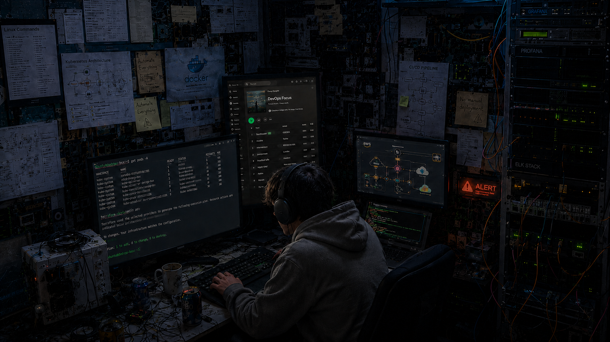

hi, im saurabh.
devops. cloud. linux.
profile / saurabh
mumbai, india
about
I come from a traditional Maharashtrian joint family and am the first engineer in my family. Ever since 4th grade, I wanted a computer of my own. That curiosity eventually turned into a seven-year journey through Computer Science, heavily influenced by watching Mr. Robot in 2015. It showed me a side of technology that felt exciting, creative, and limitless.
I started my career at an AR/VR simulation company, wearing multiple hats along the way. I began as a software tester, transitioned into content creation where I developed stories, themes, and experiences for immersive sims, and eventually moved into development, contributing to the technical side of building and improving those experience.
Eventually, I found my calling with Linux. The terminal was what I had been looking for all along. While I love building things, I enjoy fixing broken things even more. Today, I work as a DevOps Engineer, focused on automation, cloud infrastructure, CI/CD, reliability, and making systems easier for others to build on.
Technology moves fast, and that's exactly why I love it. I'm always exploring new tools, ideas, and ways to solve problems.